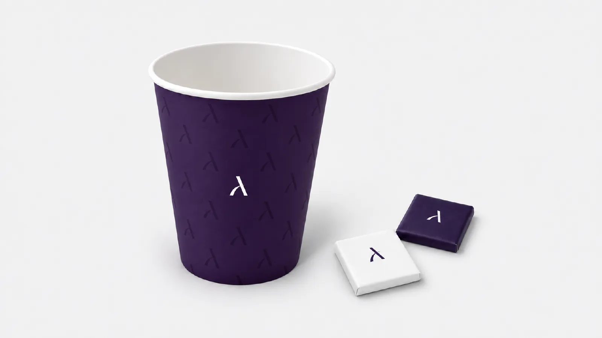

Иван Камальдинов
Коммуникационный дизайнер с опытом работы более 15 лет. Разрабатываю рекламу, айдентику, цифровые и печатные продукты. Визуальный стиль, иерархия и системы, которые работают на любых носителях — от книжного разворота до рекламного щита.